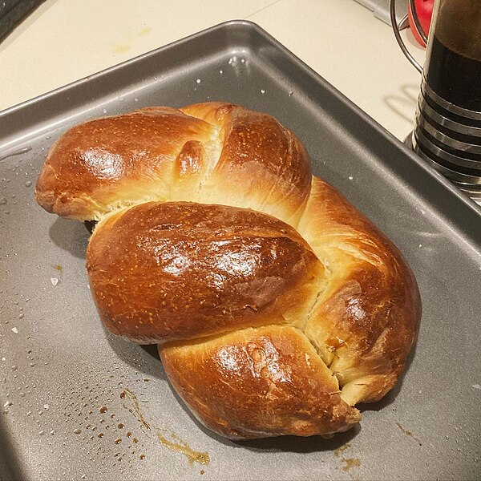

Challah

Description
Channah is a special bread of Ashkenazi Jewish origin, usually made for
such occasions as Shabbat and
major non-Passover holidays. In order to qualify for the ritual, chabbah
is to be baked from dough from
which a small piece has been set aside as an offering.
Ingredients
- Bread flour - 9 cups / 1233 grams
- Sugar - ½ cup plus 1 tablespoons / 9 tablespoons / 112.6 grams
- Warm water 2½ cups / 593 grams
- Active dry yeast - 6¾ teaspoons / 27 grams
- Salt - 1 tablespoon / 18 grams
- Four eggs
- Vegetable oil - ½ cups / 109 grams
- Egg wash[1]
- Sesame seeds
Steps
- Dough
- Put bread flour in a bowl. Mix in the ½ cup of sugar and the salt.
- In a small bowl or large measuring cup, add the
1 ½ cups of warm water.
Mix in the 1 tablespoon of sugar. Sprinkle the yeast
on top and wait 8 minutes.
The yeast mixture should be foamy.
- Briefly mix the yeast mixture, then mix it into the flour mixture.
- Mix in the eggs and oil.
- Add the remaining 1 cup warm water, and
knead the dough for about 10 minutes.
- Let the dough rise, covered, for two-four hours.
- Braiding
- Divide the dough into four parts. These will make 4 challahs.
- Take one part. Separate it into four pieces. Take each piece and
roll it between your
hands until it is a long strand.
Attach the four strands together at one end by
squeezing the ends together.
- Place on a piece of foil or a pan.
- Take the strand at the far left and braid by putting it
over two strands to the right
and then put it back
under one strand to the left.
- Take the strand at the far right and put it over two strands to the
left and then put it back
under one strand to the right.
- Repeat the last two steps until you reach the end of the strands.
- Do the same thing with the other three parts.
- Finish
- Brush each loaf with egg wash and sprinkle with sesame seeds.
- Allow to rise for two hours.
- Bake in preheated oven at 400°F (200°C) for 25 minutes.
Home
Back to top